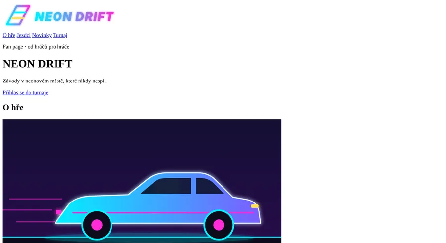
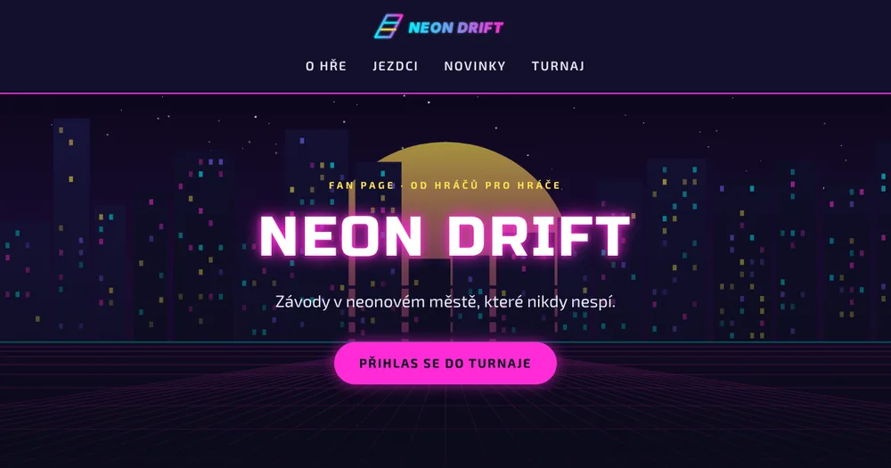
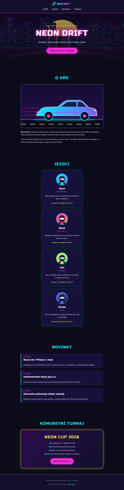
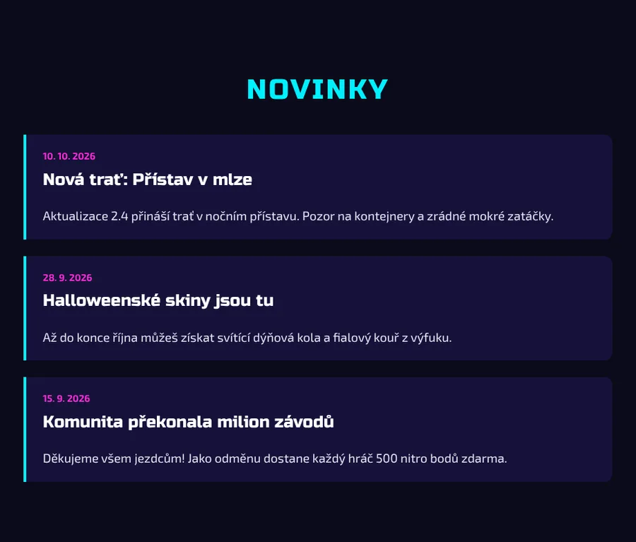
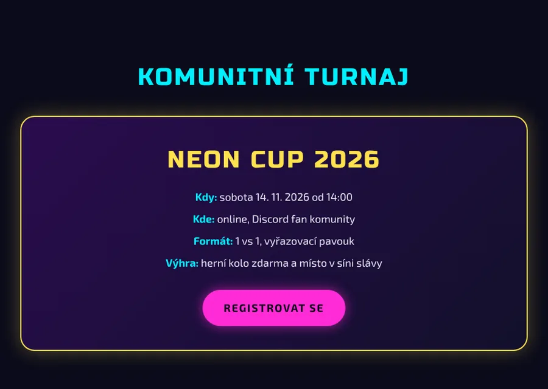
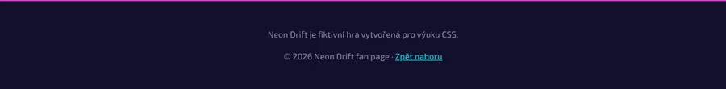
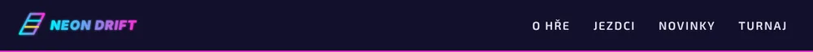
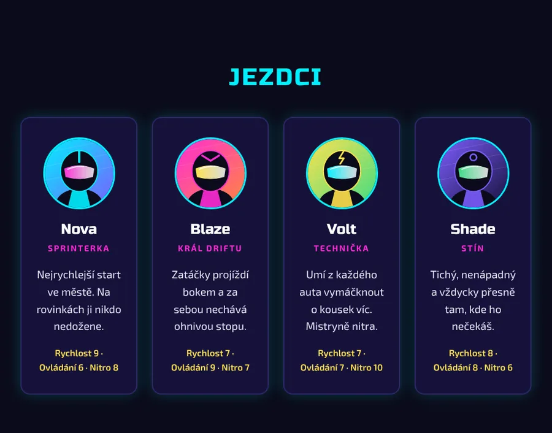

Seminář z informatiky · CSS · 90 minut
Nastyluj fan page NEON DRIFT
Dostaneš hotové HTML a prázdný soubor style.css. Krok za krokem z obyčejné stránky uděláš neonový web fiktivní závodní hry.


Co se dnes naučíš
Zopakuješ si práci s textem a barvami a přidáš spoustu nových věcí: Google Fonts, selektory id a vnořené selektory, box model (padding, margin, border), obrázky a přechody na pozadí, stíny, efekt při najetí myší (:hover) a plynulé animace (transition).
Než začneš
- Stáhni si zadání: Stáhnout neon-drift-zadani.zip
Složkuneon-driftze ZIPu rozbal a otevři ji ve VS Code: File → Open Folder… - V levém panelu klikni pravým tlačítkem na
index.htmla zvol Open with Live Server. Stránka se otevře v prohlížeči a po každém uložení se sama obnoví. - Rozlož si okna vedle sebe: VS Code vlevo, prohlížeč vpravo (Win + ← / →).
- Všechno CSS píšeš do
style.css. Doindex.htmlsáhneš jen jednou, v kroku 1. - Po každé změně ulož Ctrl + S. Kód ti pěkně zarovná Prettier: Shift + Alt + F.
Co je ve složce
Značky v pracovním listu
- Nové vlastnost, kterou jste ještě nebrali, je pod ní vysvětlená
- Navedeno kód dostaneš celý
- Samostatně dostaneš zadání, kód napíšeš sám
- Bonus pro rychlíky
Časový plán
Krok 3 (box model) je nejdůležitější a nejdelší. Když se zasekneš, mrkni do části Nefunguje to.
Cílový vzhled
Takhle bude stránka vypadat po kroku 7. Posouvej uvnitř rámečku.

Mapa stránky
Tohle jsou třídy a id, které najdeš v index.html. Budeš je používat jako selektory.
.portret h3 .role .staty
Opakování: propojení a syntaxe
Ověříš, že je CSS správně připojené, a připomeneš si, jak se píše pravidlo.
Propojení HTML a CSS
V index.html v části <head> už je tento řádek:
<link rel="stylesheet" href="style.css">
rel="stylesheet"říká prohlížeči: „tohle je soubor se styly“.href="style.css"je cesta k souboru. Protožestyle.cssleží ve stejné složce jakoindex.html, stačí jen jeho název.
Test propojení
NavedenoNapiš do style.css toto pravidlo a ulož:
body {
background-color: red;
}Zčervenalo pozadí? Propojení funguje. Pravidlo zase smaž.
Jak se píše CSS pravidlo
h2selektorCO stylujeme
{závorkacolorvlastnostCO měníme
:dvoj-tečka
#00f0ffhodnotaJAK to bude
;středník}závorka- Jedno pravidlo může mít libovolně deklarací. Každá končí středníkem.
- Selektor
pvybere všechny odstavce (selektor prvku). Selektor.kartavybere všechno sclass="karta". V CSS píšeš tečku, v HTML ne. - Komentář se píše
/* takhle */. Prohlížeč ho ignoruje, tobě pomůže se v souboru vyznat.
Písma a barvy
Připojíš dvě písma z Google Fonts, stránce dáš tmavé pozadí a nastylováš nadpisy.
Nové · Google Fonts
Písma z internetu
Ve font-family můžeš použít jen písmo, které má počítač návštěvníka. Na každém počítači jsou ale jiná písma. Google Fonts je knihovna zdarma, odkud si prohlížeč písmo sám stáhne. Použití má dva kroky:
- Do
<head>v HTML vložíš odkaz na písmo. - V CSS písmo použiješ ve
font-family.
Připoj písma (do index.html)
NavedenoV index.html najdi komentář <!-- KROK 1: … --> a hned pod něj vlož tyto tři řádky:
<link rel="preconnect" href="https://fonts.googleapis.com"> <link rel="preconnect" href="https://fonts.gstatic.com" crossorigin> <link href="https://fonts.googleapis.com/css2?family=Exo+2:wght@400;600;700&family=Russo+One&display=swap" rel="stylesheet">
- První dva řádky (
preconnect) jen zrychlí stahování. - Třetí řádek stahuje písmo Exo 2 (na běžný text) v tloušťkách 400, 600 a 700 a písmo Russo One (na nadpisy). Mezera v názvu se v adrese píše jako
+.
Tip · jiné písmo
Na fonts.google.com si můžeš vybrat jiné písmo: klikni na něj, pak Get font → Get embed code a zkopíruj odkaz. Hlídej, aby písmo podporovalo češtinu: ve filtru jazyků zvol Czech. Jinak se písmena jako ř, č nebo ů zobrazí jiným písmem.
Barvy projektu
Celý web používá tuhle paletu. Kliknutím na barvu ji zkopíruješ.
Stránka a nadpisy (do style.css)
Navedeno/* ===== KROK 1: Celá stránka, písma a nadpisy ===== */
body {
background-color: #0b0b1a;
color: #e8e8f5;
font-family: "Exo 2", sans-serif;
font-size: 18px;
line-height: 1.6;
}
h1,
h2,
h3 {
font-family: "Russo One", sans-serif;
font-weight: 400;
}
h2 {
color: #00f0ff;
font-size: 40px;
text-align: center;
text-transform: uppercase;
letter-spacing: 3px;
}
h3 {
color: #ffffff;
font-size: 24px;
}Nové · seskupení selektorů
h1, h2, h3 { … }
Když chceš stejný styl pro víc selektorů, oddělíš je čárkou. Pravidlo výše platí pro všechny tři nadpisy najednou a ušetří ti psaní. Potom můžeš každému nadpisu přidat vlastní pravidlo (jako h2 a h3 výše).
Proč to tak je
"Exo 2", sans-serif: první je písmo, které chceme. Kdyby se nestáhlo, použije se záložnísans-serif(jakékoliv bezpatkové). Název s mezerou dáváme do uvozovek.font-weight: 400u nadpisů: Russo One má jen jednu tloušťku. Nadpisy jsou normálně tučné, takže by ho prohlížeč „ztučnil“ uměle a vypadalo by rozmazaně.
Kontrola
Odkazy jsou zatím modré a podtržené. To spravíš v dalším kroku.
Nové selektory: id a vnořený
Naučíš se vybrat jeden konkrétní prvek a prvky, které leží uvnitř jiného prvku. Nastylováš s nimi hlavičku.
Nové · selektor id
#hlavicka { … }
V HTML má hlavička atribut id="hlavicka". V CSS ho vybereš mřížkou #, podobně jako třídu tečkou.
| Třída | Id | |
|---|---|---|
| V HTML | class="karta" | id="hlavicka" |
| V CSS | .karta | #hlavicka |
| Kolikrát na stránce | kolikrát chceš | jen jednou, id je jedinečné |
| Kdy použít | styl pro skupinu prvků | styl pro jeden konkrétní prvek |
Nové · vnořený (potomkový) selektor
#hlavicka a { … }
Dva selektory oddělené mezerou znamenají „uvnitř“. Čti to zprava doleva: „všechny a, které jsou uvnitř #hlavicka“. Ostatní odkazy na stránce (třeba tlačítka) se tím nezmění.
Vyzkoušej si to: klikni na selektor a uvidíš, které prvky stránky vybere.
Hlavička a odkazy v menu
Navedeno/* ===== KROK 2: Hlavička ===== */
#hlavicka {
background-color: #12102b;
text-align: center;
}
#hlavicka a {
color: #e8e8f5;
text-decoration: none;
text-transform: uppercase;
font-weight: 600;
letter-spacing: 2px;
}Pozor na mezeru
#hlavicka a (s mezerou) = odkazy uvnitř hlavičky. #hlavicka.a nebo #hlavickaa znamená něco úplně jiného a nebude to fungovat.
Kontrola
Box model: každý prvek je krabice
Nejdůležitější krok dneška. Naučíš se nastavit prostor uvnitř prvku, rámeček, mezery mezi prvky a šířku. Tím dostaneš stránku do tvaru.
Čtyři vrstvy každého prvku
Prohlížeč vykresluje každý prvek (nadpis, odstavec, obrázek, sekci…) jako obdélník. Ten se skládá ze čtyř vrstev, podobně jako obraz na zdi:
text, obrázek…
- obsah (content): samotný text nebo obrázek. Jako obraz.
- padding: vnitřní okraj mezi obsahem a rámečkem. Jako pasparta. Má barvu pozadí prvku.
- border: rámeček. Jako rám obrazu.
- margin: vnější okraj, mezera k sousedním prvkům. Jako volné místo na zdi mezi obrazy. Je vždy průhledný.
width: 220px
Jak se zapisují hodnoty
padding a margin můžeš napsat s jednou až čtyřmi hodnotami. Čtyři hodnoty jdou po směru hodinových ručiček od dvanáctky: nahoře, vpravo, dole, vlevo.
| Zápis | Význam |
|---|---|
padding: 20px; | všude 20 px |
padding: 10px 20px; | nahoře a dole 10, vlevo a vpravo 20 |
margin: 0 0 12px 0; | nahoře 0, vpravo 0, dole 12, vlevo 0 |
margin-bottom: 24px; | jen jedna strana: -top, -right, -bottom, -left |
Nové · rámeček
border: šířka styl barva;
Tři hodnoty oddělené mezerou, např. border: 2px solid #7c5cff;. Styl může být solid (plná), dashed (čárkovaná), dotted (tečkovaná). Rámeček jen na jedné straně: border-bottom, border-left…
border-radius: 16px;
Zaoblí rohy. Čím větší číslo, tím kulatější. Dva užitečné triky:
border-radius: 50%;ze čtverce udělá kruh (použiješ u portrétů jezdců).border-radius: 999px;z obdélníku udělá „pilulku“ (použiješ u tlačítek).
Nové · šířka
width a max-width
width: 120px;je přesná šířka.width: 100%;= celá šířka rodiče.max-width: 900px;znamená „nejvýš 900 px“. Na velkém monitoru má prvek 900 px, na mobilu se zúží na šířku displeje. Proto se hodí na obsah stránky.
margin: 0 auto; (centrování)
Když má blok menší šířku než rodič, auto rozdělí zbylé místo rovnoměrně vlevo a vpravo, takže se blok vycentruje.
max-width: 900px
Nové · box-sizing
* { box-sizing: border-box; }
Normálně se padding a border přičítají k šířce: krabice s width: 220px, paddingem 20 a rámečkem 4 je široká 220 + 2·20 + 2·4 = 268 px. To se špatně počítá. S border-box je krabice široká přesně 220 px a obsah se zúží. Vyzkoušej si to v laboratoři výše.
Hvězdička * je univerzální selektor a vybere úplně všechny prvky. Tohle pravidlo se dává na začátek skoro každého webu.
Nové · display
Proč odkaz „přetéká“: inline vs. inline-block
Odkazy <a> jsou řádkové prvky (inline). Pokud jim dáš padding, svisle přetečou přes sousední řádky, protože řádek se kvůli nim neroztáhne. Nastavením display: inline-block zůstanou v řádku, ale chovají se jako krabice a jejich padding se počítá.
Neon Drift je arkádová závodní hra. Klikni na odkaz s paddingem a podívej se, jak se chová vůči textu nad ním a pod ním. Text pokračuje dalším řádkem.
Jak doplňovat pravidla
Některé selektory už v souboru máš (třeba body nebo #hlavicka). Nové řádky dopiš do existujícího pravidla. V ukázkách níže jsou nové řádky označené komentářem /* NOVÉ */.
Základ: box-sizing a okraj stránky
NavedenoProhlížeč dává body výchozí margin 8 px, takže kolem stránky je rámeček. Vynulujeme ho. Pravidlo * napiš na úplný začátek souboru.
* {
box-sizing: border-box;
}body {
margin: 0; /* NOVÉ */
background-color: #0b0b1a;
color: #e8e8f5;
font-family: "Exo 2", sans-serif;
font-size: 18px;
line-height: 1.6;
}Hlavička
Navedeno#hlavicka {
background-color: #12102b;
text-align: center;
padding: 16px 24px; /* NOVÉ */
border-bottom: 2px solid #ff2bd6; /* NOVÉ: růžová čára pod hlavičkou */
}
/* NOVÉ pravidlo: logo bude vysoké 48 px (šířka se dopočítá sama) */
.logo {
height: 48px;
}
#hlavicka a {
color: #e8e8f5;
text-decoration: none;
text-transform: uppercase;
font-weight: 600;
letter-spacing: 2px;
display: inline-block; /* NOVÉ */
padding: 8px 16px; /* NOVÉ: odkazy od sebe odsuneme */
}Sekce: šířka a centrování
NavedenoVšechny čtyři obsahové sekce mají třídu sekce. Jedním pravidlem je zúžíme, vycentrujeme a dáme jim vzduch.
/* ===== KROK 3: Box model ===== */
.sekce {
max-width: 900px; /* nejvýš 900 px široká */
margin: 0 auto; /* nahoře a dole 0, po stranách auto = vycentrovat */
padding: 64px 24px; /* nahoře a dole 64, po stranách 24 */
}Ilustrace auta
SamostatněNapiš pravidlo pro selektor .ilustrace s těmito vlastnostmi:
| Vlastnost | Hodnota | Co to udělá |
|---|---|---|
width | 100% | obrázek vyplní celou šířku sekce |
border | 2 px, plná čára, #7c5cff | fialový rámeček |
border-radius | 16px | zaoblené rohy |
Karty jezdců
Navedeno.karta {
max-width: 420px;
margin: 0 auto 24px auto; /* vycentrovat + mezera 24 px pod každou kartou */
padding: 32px 24px;
background-color: #16123a;
border: 2px solid #2d2766;
border-radius: 16px;
text-align: center;
}Obsah karty
SamostatněNapiš čtyři pravidla podle tabulky. Pozor na selektor .karta h3: to je vnořený selektor z kroku 2 (nadpisy uvnitř karty).
| Selektor | Vlastnost | Hodnota |
|---|---|---|
.portret | width | 120px |
border | 3 px, plná, #00f0ff | |
border-radius | 50% (kruh) | |
.karta h3 | margin | nahoře 8 px, jinde 0 |
.role | margin | dole 12 px, jinde 0 |
color | #ff2bd6 | |
font-weight | 700 | |
text-transform | velká písmena | |
letter-spacing | 2px | |
font-size | 14px | |
.staty | margin-bottom | 0 |
color | #ffe14d | |
font-size | 15px | |
font-weight | 600 |
Nápověda: jak zapsat margin u .karta h3 a .role
Čtyři hodnoty: nahoře, vpravo, dole, vlevo. Takže „nahoře 8, jinde 0“ je margin: 8px 0 0 0; a „dole 12, jinde 0“ je margin: 0 0 12px 0;.
Bádej · vývojářské nástroje
V prohlížeči klikni pravým na kartu a zvol Prozkoumat (F12). Vpravo v záložce Styly / Computed uvidíš barevný box model přesně toho prvku, i s čísly. Hodnoty tam můžeš zkusmo měnit. Změny se ale neukládají do souboru.
Kontrola
Pozadí úvodní sekce
Úvodní sekce (hero) dostane obrázek nočního města a přes něj průhledný přechod, aby byl text dobře čitelný.
Nové · obrázek na pozadí
background-image: url("img/hero.svg");
Na rozdíl od <img> v HTML je obrázek na pozadí jen dekorace a přes něj může být text. Cesta v url() se počítá od souboru CSS. Náš style.css je vedle složky img, proto stačí img/hero.svg.
background-size a background-position
background-size: cover;obrázek se zvětší tak, aby zakryl celý prvek. Něco se ořízne, ale nikde nebude prázdné místo.background-size: contain;celý obrázek bude vidět, ale může zbýt prázdné místo a obrázek se pak opakuje jako dlaždice.background-position: center;při ořezu zůstane vidět prostředek obrázku.
NEON DRIFT
Nové · barevný přechod
linear-gradient(směr, barva1, barva2)
Prohlížeč vytvoří obrázek, ve kterém plynule přechází jedna barva do druhé. Protože je to obrázek, píše se do background-image, ne do background-color.
- Směr můžeš vynechat (výchozí je shora dolů), napsat slovy
to rightnebo úhlem135deg(šikmo). - Barvy můžou být průhledné:
rgba(11, 11, 26, 0.5). Čtvrté číslo je průhlednost od 0 (neviditelná) do 1 (plná).
0deg = zdola nahoru, 90deg = zleva doprava, 180deg = shora dolů.
Vrstvení: gradient přes obrázek
Do background-image můžeš dát víc obrázků oddělených čárkou. První je nahoře, poslední vespod.
- Úplně nahoře je text (obsah prvku).
- Pod ním je gradient: nahoře skoro průhledný, dole skoro neprůhledný. Ztmaví obrázek, takže text je čitelný, a dole plynule přejde do barvy stránky.
- Vespod je obrázek města.
Pozadí hero sekce
Navedeno/* ===== KROK 4: Hero sekce ===== */
#hero {
background-image: linear-gradient(rgba(11, 11, 26, 0.2), rgba(11, 11, 26, 0.95)),
url("img/hero.svg");
background-size: cover;
background-position: center;
padding: 120px 24px;
text-align: center;
}Dlouhý řádek background-image je rozdělený na dva řádky jen kvůli přehlednosti. Je to pořád jedna deklarace, středník je až na konci.
Texty v hero sekci
Samostatně| Selektor | Vlastnost | Hodnota |
|---|---|---|
#hero h1 | margin | 0 |
color | #ffffff | |
font-size | 80px | |
letter-spacing | 4px | |
.stitek | margin | 0 |
color | #ffe14d | |
font-size | 14px | |
font-weight | 700 | |
text-transform | velká písmena | |
letter-spacing | 4px | |
.podtitul | margin | nahoře 8 px, vpravo 0, dole 40 px, vlevo 0 |
font-size | 24px |
Kontrola
Obrázek se nezobrazuje? Zkontroluj cestu img/hero.svg a uvozovky v url("…").
Neonová záře
Stín se dá použít jako klasický stín, ale i jako svítící záře. Přesně to potřebuje neonový web.
Nové · stín krabice
box-shadow: x y rozmazání barva;
box-shadowvlastnost: 0posunvodorovně
0posunsvisle
24pxrozmazání rgba(0, 240, 255, 0.2)barva(s průhledností)
;- Klasický stín: posun dolů a tmavá barva, např.
0 8px 16px rgba(0,0,0,0.5). - Neonová záře: žádný posun (0 0), velké rozmazání a svítivá barva. Stín je pak rovnoměrně kolem dokola.
- Volitelně můžeš za rozmazání přidat 4. číslo, roztažení (spread), které stín zvětší.
Nové · stín textu
text-shadow: x y rozmazání barva;
Funguje stejně jako box-shadow, jen kolem písmen (a nemá roztažení). Stínů můžeš dát víc najednou, oddělených čárkou, a záře je pak silnější.
Záře karet
SamostatněDo pravidla .karta přidej box-shadow: bez posunu, rozmazání 24 px, barva tyrkysová rgb(0, 240, 255) s průhledností 0.2.
Nápověda
Průhlednou barvu zapíšeš jako rgba(0, 240, 255, 0.2). Hodnota má čtyři části: posun x, posun y, rozmazání, barva.
Svítící nadpis
NavedenoDo pravidla #hero h1 přidej dvojitou růžovou záři:
text-shadow: 0 0 24px #ff2bd6, 0 0 8px #ff2bd6;
Bádej: zkus změnit barvu na #00f0ff nebo přidat třetí stín. Která varianta se ti líbí nejvíc?
Kontrola
Tlačítka a reakce na myš
Z modrých odkazů uděláš svítící tlačítka, které na najetí myší plynule změní barvu. Tím se stránka „oživí“.
Nové · pseudotřída :hover
.tlacitko:hover { … }
Pseudotřída popisuje stav prvku. :hover platí jen ve chvíli, kdy je nad prvkem myš. Do pravidla píšeš jen to, co se má změnit. Zbytek se převezme z normálního pravidla.
Pozor: mezi .tlacitko a :hover není mezera.
Nové · plynulá změna
transition: vlastnost čas;
Bez transition se změna stane okamžitě. S transition: background-color 0.3s; se barva mění plynule 0,3 sekundy. Víc vlastností oddělíš čárkou.
Důležité: transition píšeš do normálního pravidla, ne do :hover. Pak je změna plynulá při najetí myší i při odjetí.
Nové · kurzor
cursor: pointer;
Nad prvkem se ukáže „ručička“. Uživatel tak hned pozná, že na prvek jde kliknout. U odkazů je ručička automaticky, u jiných prvků ji musíš nastavit.
Menu svítí při najetí myší
Navedeno/* ===== KROK 6: Odkazy a tlačítka ===== */
/* do existujícího pravidla #hlavicka a doplň: */
#hlavicka a {
transition: color 0.3s; /* NOVÉ */
}
/* NOVÉ pravidlo */
#hlavicka a:hover {
color: #00f0ff;
}Pro jednoduchost tu je jen nový řádek. V souboru ho dopiš na konec už existujícího pravidla #hlavicka a.
Tlačítko
SamostatněObě tlačítka na stránce mají třídu tlacitko, takže jedním pravidlem nastylujeme obě. Napiš pravidlo .tlacitko:
| Vlastnost | Hodnota | Proč |
|---|---|---|
display | inline-block | aby padding nepřetékal (krok 3) |
padding | 16 px nahoře a dole, 36 px po stranách | velké pohodlné tlačítko |
background-color | #ff2bd6 | |
color | #0b0b1a | tmavý text na světlém tlačítku je čitelnější |
font-weight | 700 | |
text-decoration | none | bez podtržení |
text-transform | velká písmena | |
letter-spacing | 2px | |
border-radius | 999px | tvar pilulky |
box-shadow | 0 0 20px rgba(255, 43, 214, 0.6) | růžová záře |
cursor | pointer | ručička |
transition | background-color 0.3s, box-shadow 0.3s | plynulá změna dvou vlastností |
Tlačítko při najetí myší
Navedeno.tlacitko:hover {
background-color: #00f0ff;
box-shadow: 0 0 32px rgba(0, 240, 255, 0.8);
}Karta při najetí myší
SamostatněUdělej, aby se karta jezdce při najetí myší „rozsvítila“:
- rámeček změní barvu na tyrkysovou
#00f0ff(vlastnostborder-color), - záře zesílí na
0 0 32px rgba(0, 240, 255, 0.45), - obojí se mění plynule 0,3 s.
Nápověda 1: kolik pravidel potřebuju?
Dvě. Do existujícího .karta přidáš transition. Pak napíšeš nové pravidlo .karta:hover se změněnými vlastnostmi.
Nápověda 2: řešení transition
transition: border-color 0.3s, box-shadow 0.3s;
Kontrola
Samostatná práce: dokonči stránku
Teď už umíš všechno potřebné. Nastyluj zbylé tři části tak, aby vypadaly jako na obrázcích. Nápovědy otvírej, až když si nevíš rady. Nejdřív zkus první, pak druhou.
7a · Novinky

Nápověda 1: selektory a vlastnosti
.novinka:margin-bottom,padding,background-color,border-left,border-radius(4 hodnoty: levé rohy 0, pravé zaoblené)..datum:margin,color,font-size,font-weight..novinka h3:margin(menší mezery kolem nadpisu)..novinka p:margin-bottom: 0, aby pod textem nebyla zbytečná mezera.
U border-radius se 4 hodnotami jde pořadí rohů: levý horní, pravý horní, pravý dolní, levý dolní.
Nápověda 2: hodnoty
.novinka: margin-bottom24px, padding20px 24px, pozadí#16123a, border-left4px solid #00f0ff, border-radius0 12px 12px 0.datum: margin0, barva#ff2bd6, velikost14px, tloušťka700.novinka h3: margin4px 0 8px 0
7b · Turnaj

Nové · seznam bez odrážek
list-style: none;
Odstraní odrážky (tečky) u <ul>. Seznam má navíc výchozí padding vlevo (místo pro odrážky), ten vynuluješ pomocí padding: 0;.
Nápověda 1: selektory a vlastnosti
.info-box:padding,background-image(gradient šikmo),border,border-radius,box-shadow,text-align..velky-text:margin,color,font-family(stejné jako nadpisy),font-size,letter-spacing..info-box ul:list-style,padding,margin(dole mezera před tlačítkem)..info-box li:margin-bottom..info-box strong:color(tyrkysové „Kdy:“, „Kde:“…).
Nápověda 2: hodnoty
.info-box: padding40px, background-imagelinear-gradient(135deg, #2a0c4e, #12102b), border2px solid #ffe14d, border-radius24px, box-shadow0 0 32px rgba(255, 225, 77, 0.3), text-aligncenter.velky-text: margin0 0 16px 0, barva#ffe14d, font-family"Russo One", sans-serif, velikost40px, letter-spacing3px.info-box ul: list-stylenone, padding0, margin0 0 32px 0.info-box li: margin-bottom8px.info-box strong: barva#00f0ff
7c · Patička

Nápověda 1: selektory a vlastnosti
footer:padding,background-color,border-top,color,font-size,text-align.footer a:color.
Nápověda 2: hodnoty
footer: padding32px 24px, pozadí#12102b, border-top2px solid #ff2bd6, barva#8f8fb3, velikost15px, text-aligncenterfooter a: barva#00f0ff
Závěrečná kontrola
Bonusové úkoly
Hotovo dřív? Zkus tyhle vylepšení. Na konec style.css si napiš komentář /* ===== BONUSY ===== */ a pod něj je přidávej.
Plynulé posouvání stránky
BonusKdyž teď klikneš v menu na „Turnaj“, stránka na sekci skočí. S touto vlastností se k ní plynule posune:
html {
scroll-behavior: smooth;
}Nové · flexbox
display: flex;
Když rodiči nastavíš display: flex, stane se z něj flex kontejner a všechny jeho přímé děti se seřadí vedle sebe do řady. Jak se v řadě rozmístí, určuje justify-content. Jak se zarovnají svisle, určuje align-items.
Logo vlevo, menu vpravo
BonusPřímé děti #hlavicka jsou dvě: logo a <nav>. Pomocí flexboxu dej logo doleva a menu doprava, obojí svisle na střed.
Nápověda
Použij display: flex, justify-content: space-between a align-items: center.

Karty jezdců vedle sebe
BonusKarty jsou zabalené v <div class="karty">. Udělej z něj flex kontejner, aby byly 4 karty v jedné řadě.
.karty {
display: flex;
flex-wrap: wrap; /* když se karty nevejdou, zalomí se na další řádek */
gap: 24px; /* mezera mezi kartami */
}
.karta {
flex: 1; /* všechny karty si rozdělí místo rovným dílem */
min-width: 180px; /* užší nebudou, raději se zalomí */
max-width: none; /* zrušíme max-width z kroku 3 */
margin: 0; /* zrušíme margin z kroku 3, mezery teď dělá gap */
}Proč to funguje · kaskáda
Pravidlo .karta už máš z kroku 3. Když má stejný selektor stejnou vlastnost dvakrát, vyhrává to, co je v souboru níž. Proto bonus píšeš na konec souboru: přepíše max-width a margin, ostatní vlastnosti karty zůstanou.

Nové · transformace
transform: scale() / translateY() / rotate()
Prvek zvětší, posune nebo otočí, aniž by se pohnulo cokoliv kolem něj. Hodí se na efekty při najetí myší. Najeď na kartičky:
zvětší o 8 %
posune nahoru
pootočí
Tlačítko a karty se pohnou
Bonus- Tlačítko se při najetí myší zvětší:
transform: scale(1.08); - Karta jezdce při najetí myší vyskočí nahoru:
transform: translateY(-8px); - Aby byl pohyb plynulý, přidej
transform 0.3sdo seznamu vtransition(oddělené čárkou).
Nápověda
.tlacitko {
transition: background-color 0.3s, box-shadow 0.3s, transform 0.3s;
}
.tlacitko:hover {
transform: scale(1.08);
}Pro .karta a .karta:hover to udělej stejně.
Udělej si to po svém
Bonus- Změň barevné schéma: třeba místo růžové použij zelenou
#3ddc84nebo oranžovou#ff8a3d. Funkce Najít a nahradit (Ctrl + H) ve VS Code ti ušetří práci. - Vyber jiné písmo na Google Fonts.
- Přidej hover efekt na portrét jezdce (třeba změnu barvy rámečku).
Nefunguje to?
Projdi tenhle seznam odshora. Většina chyb je jeden znak.
| Příznak | Co zkontrolovat |
|---|---|
| Nic se nemění | Uložil(a) jsi soubor (Ctrl + S)? Běží Live Server? Upravuješ style.css ve správné složce? |
| Nefunguje jedno pravidlo | Tečka u třídy (.karta), mřížka u id (#hero). Název přesně jako v HTML, včetně pomlček (info-box). |
| Nefunguje všechno od určitého místa dolů | Chybí } nebo středník o kus výš. Pomůže Prettier (Shift + Alt + F): když kód nezformátuje, je v něm chyba syntaxe. |
| Vlastnost je ve VS Code podtržená | Překlep v názvu vlastnosti nebo hodnoty (backround, centre). |
| Nezobrazí se obrázek na pozadí | Cesta url("img/hero.svg"), uvozovky a závorky. Píšeš to do background-image? |
| Nezobrazí se písmo | Je odkaz na Google Fonts v <head>? Název ve font-family v uvozovkách a přesně: "Exo 2", "Russo One". |
| Hodnota v px nefunguje | Mezi číslem a jednotkou nesmí být mezera: 24px, ne 24 px. |
| Hover se mění skokem | transition patří do normálního pravidla, ne do :hover. |
| Pořád nevíš? | Pravým tlačítkem na prvek → Prozkoumat. Přeškrtnutá vlastnost znamená, že ji přepsalo jiné pravidlo. Žlutý vykřičník znamená neplatnou hodnotu. |
Tahák: co je dnes nové
Všechno nové z dnešní hodiny na jednom místě.
| Zápis | Co dělá | Příklad |
|---|---|---|
#id | vybere prvek s daným id | #hero |
A B | vybere B uvnitř A | .karta h3 |
A, B | stejný styl pro A i B | h1, h2, h3 |
* | vybere všechny prvky | * { box-sizing: border-box; } |
:hover | stav „myš je nad prvkem“ | .tlacitko:hover |
padding | vnitřní okraj | 16px 36px |
margin | vnější okraj | 0 auto |
border | rámeček: šířka styl barva | 2px solid #ff2bd6 |
border-radius | zaoblení rohů | 16px, 50%, 999px |
width / max-width | šířka / největší šířka | 100%, 900px |
box-sizing | šířka zahrnuje padding a border | border-box |
display | chování prvku | inline-block, flex |
background-image | obrázek / přechod na pozadí | url("img/hero.svg") |
linear-gradient() | barevný přechod | linear-gradient(135deg, #2a0c4e, #12102b) |
background-size | velikost obrázku na pozadí | cover |
background-position | umístění obrázku na pozadí | center |
box-shadow | stín / záře krabice | 0 0 24px rgba(0,240,255,0.2) |
text-shadow | stín / záře textu | 0 0 24px #ff2bd6 |
transition | plynulá změna | color 0.3s |
cursor | tvar kurzoru | pointer |
list-style | odrážky seznamu | none |
transform | zvětšení, posun, otočení | scale(1.08) |